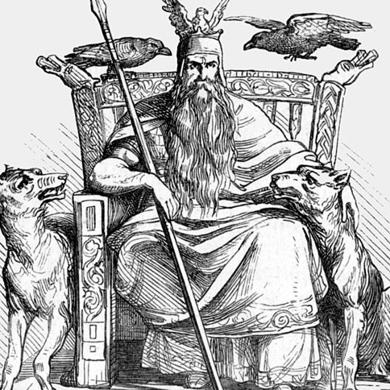
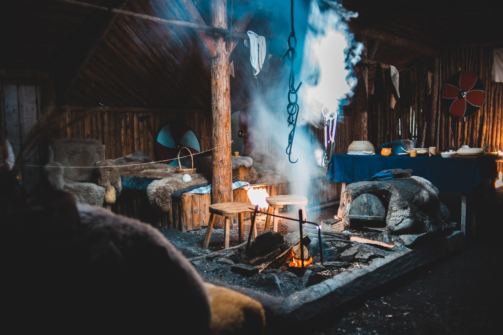

Welcome to my collection of recipes, mortals!
I am Odin, the Allfather, the god of wisdom, knowledge, war, and death. Throughout my long life, I have seen the rise and fall of civilizations, the birth and death of heroes, and the changing of the seasons. But one thing that has remained constant is the importance of food in human culture. Whether it is a humble bowl of porridge or a grand feast fit for the gods, food has the power to nourish the body, uplift the soul, and bring people together.
On this website, I will share with you some of my favorite recipes from the ancient Norse tradition, as well as modern twists on classic dishes. From hearty stews to savory flatbreads, each recipe has been carefully selected and tested by yours truly. I have gathered inspiration from my travels across the nine realms, as well as from the memories of my own feasts in Valhalla.
As a god of wisdom and knowledge, I am aware of the importance of eating healthy and nutritious foods. Therefore, I have made sure that my recipes include a balance of proteins, carbohydrates, and healthy fats. I also like to incorporate herbs and spices that have medicinal properties, such as garlic and stinging nettles.
But food is not just about nourishment; it is also about pleasure and enjoyment. I believe that food should be delicious and satisfying, and that it should bring joy to those who eat it. Therefore, I have put a lot of effort into creating recipes that are both healthy and delicious. From sweet treats like honey cakes to savory dishes like smoked salmon, each recipe has been crafted with care and attention to detail.
I hope that my recipes will inspire you to explore the rich culinary traditions of the Norse culture, and to discover new flavors and ingredients that you may not have tried before. Whether you are a seasoned cook or a beginner, there is something here for everyone. So grab your apron, sharpen your knives, and let's get cooking!